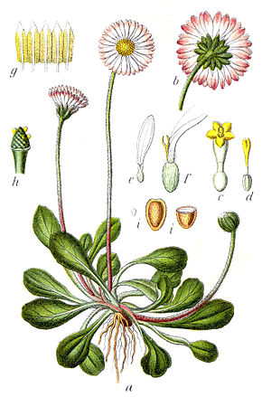
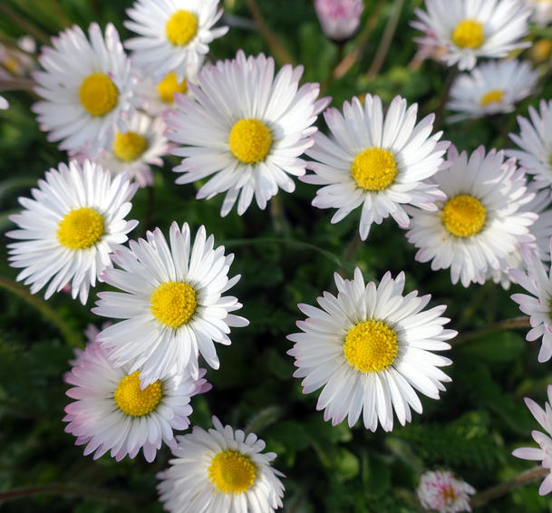
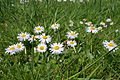
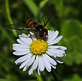
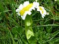
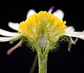
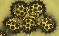

| Règne : | Plantae | |
| Sous-règne : | Tracheobionta | |
| Division : | Magnoliophyta |
LC : Préoccupation mineure Europe, France

La pâquerette porte plusieurs noms vernaculaires : petite marguerite, pâquerette des près, fleur de Pâques, petite consyre, fleur de tous les mois, Tro-heol (littéralement tournesol) en Bretagne6. Son nom anglais de daisy provient de l'anglo-saxon daeges eage (day’s eye, littéralement « œil du jour »), allusion à la fleur qui s'ouvre le matin et se ferme complètement le soir2.
|  |
|
 |
Plusieurs théories se proposent d'expliquer l'origine du nom scientifique de la plante. La plus fréquente et plus probable le fait dériver du latin bellus (« joli, élégant »), qui évoque sa beauté. Une étymologie populaire l'associe au latin bellum (« guerre »), faisant référence au fait qu’elle pousse fréquemment sur les champs de batailles ou à sa capacité à traiter les ecchymoses et les blessures profondes (usage indiqué en vertu de la théorie des signatures). Selon un mythe romain rappelé par Ovide, Bellis provient d'une Dryade nommée Belides poursuivie par Vertumne et qui se métamorphose en pâquerette pour échapper aux assiduités de ce dieu. Le nom est également associé à Belenos, dieu de la mythologie celtique2. L'épithète latin perennis signifie pérenne, de per annos, à « travers les années », sous-entendu : vivant plusieurs années, mais indiquant aussi son aspect rustique. Son nom vernaculaire de pâquerette viendrait du fait que la plante fleurit essentiellement à la période de Pâques3. Mais François Noël donne dans son Dictionnaire étymologique, critique, historique, et anecdotique de la langue française une autre origine, reprise par Émile Littré qui réfute la précédente ainsi : « Mais ce ne peut être la cause du nom de la plante, puisqu’elle fleurit à peu près toute l’année ». Son nom viendrait de l'ancien français « pasquier » désignant les pâturages, référence aux lieux où elle pousse4,5.
|

Habitus: |

Syrphe ceinturé en plein butinage d'une « fleur »: |

Pâquerette fasciée: |

Section du réceptacle: |

Grains de pollen (400x): |
La pâquerette est une plante très rustique formant des touffes denses. Espèce commune, héliophile, acidicline à calcicline, elle fleurit toute l’année, mais surtout de mars à novembre. Hémicryptophyte, on la trouve sur des sols un peu humides et compacts toute l'année. Elle est toujours dans des végétations très rases, riches, souvent piétinées (le plus souvent dans des prairies nitrophiles pâturées grâce à sa tolérance aux herbivores par une rosette plaquée au sol et une capacité de régénération rapide de sa tige florifère, puis s'étant adaptée aux bords de chemins, dans les pelouses urbaines ou les gazons tondus). En France, elle est rattachée aux alliances phytosociologiques suivantes : Agrostietea stoloniferae (espèce pionnière dans les sites perturbés), Lolio perennis-Plantaginion majoris (communautés pâturées collinéennes), Arrhenatherion elatioris (prairies essentiellement fauchées), Cynosurion cristati (prairies essentiellement pâturées). Selon Gérard Ducerf, cette plante serait bio-indicatrice des sols en cours de décalcification, de lessivage et/ou d'érosion, et dont la perte des ions Fe et Ca entraînant une déficience de la cohésion du Complexe argilo-humique (CAH) et de son pouvoir de fixation des argiles et de la matière organique. Cette espèce eurasienne, présente jusqu'à 2 500 m d'altitude est très commune en Europe.
Leurs fruits s'envolent grâce au vent (anémochorie) et dégagent des odeurs qui attirent les insectes. Elles ont la particularité, comme certaines autres fleurs de plantes herbacées, de se fermer la nuit et de s'ouvrir le matin pour s'épanouir au soleil ; elles peuvent aussi se fermer pendant les averses, voire un peu avant, ce qui permettrait dans les campagnes de prédire la pluie légèrement à l'avance.